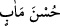
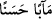
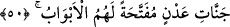

60. (Reislere uyanlar ise:) Hayır, asıl siz rahat yüzü görmeyin! Onu bize siz
sundunuz! Ne kötü bir yerdir! derler.
61. Yine onlar: Rabbimiz! Bunu bizim önümüze kim getirdiyse onun ateşteki
azâbını iki kat artır! derler.
62. (İnkârcılar) derler ki: Kendilerini dünyada iken kötülerden saydığımız
kimseleri burada niçin görmüyoruz?
63. Alaya aldığımız onlar değil miydi? Yoksa (buradalar da) onları gözden mi
kaçırdık?
64. İşte bu, cehennem ehlinin tartışması, şüphesiz bir gerçektir.
“İşte” peygamberlerle ilgili bütün “bu,” anlattıklarımız, bir “hatırlatma” ve onlar
için bir şeref ve edebî olarak anılacakları bir zikr-i cemîl“dir.”
Peygamberlerin güzelliklerinden bahseden bütün bu âyet-i kerimeler, mezkûr
peygamberler için kendilerinin ebediyyen hayırla yâd edilmesini sağlayacak birer zikr-i
cemîl ve onlar için birer şereftir. Nitekim “at ölür meydan kalır; yiğit ölür şan kalır”
denilmiştir.
İnsanların (ata) sözü olarak şu bir yâdigârdır,
Hâtırası, insandan daha hayırlıdır.
Tefsîr-i Fârisî’ye göre mânâ şöyledir: Ey Muhammed! Peygamberlerle ilgili bütün bu
anlattıklarımız hem senin hem de kavmin için bir hatırlama vesilesidir.
“İşte bu, bir hatırlatmadır” ifâdesi, “Şüphesiz bu Kur’an, sana ve kavmine bir
öğüt ve bir şereftir” (ez-Zuhruf 43/44) âyetine benzemektedir.
İbn Abbas’a (r.a.) göre âyetin anlamı: “Bu, geçmiş peygamberleri bir hatırlatmadır”
şeklindedir.
et-Te’vîlâtü’n-Necmiyye’de der ki: Bu, yâni Kur’an-ı Kerim var ya işte bunda
önceden olmuş şeyler anlatılmakta ve ibret alıp onlara uyman için de peygamberlerin
ibretli hayat hikâyelerine yer verilmektedir.
“Doğrusu” başkasından değil sadece “Allah’a karşı gelmekten sakınanlara” yâni
muttakîlere dünyada sâhip oldukları bu hayırla yâd edilişin yanısıra elbetteki âhirette de
“güzel bir gelecek vardır.”
(__WORD__) tâbiri, sıfatın mevsufuna izâfesi kabîlinden olup (__WORD__) demektir.
50. Kapıları yalnızca kendilerine açılmış Adn cennetleri vardır.